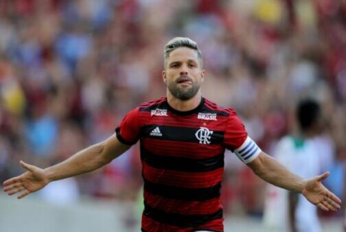
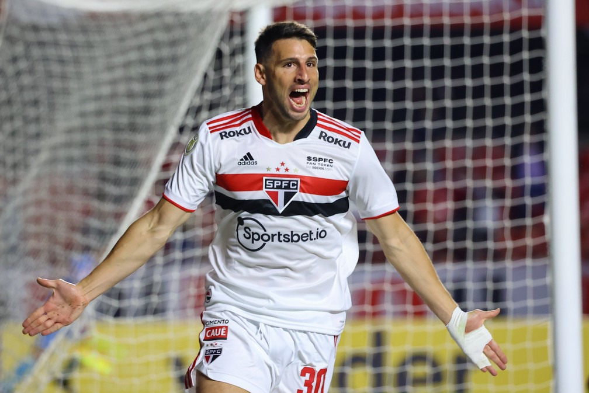

Será que em 2022 Diego ribas vem para o SPFC?
SPFC esta analisando o caso.
São Paulo FC que entra em um acordo com o flamengo para traser o volante para o tricolor por pedido ao R.ceni. Mas o flamengo esta querendo um valor muito alto pelo jogador, está em um valor de 10M de reias.

Veja agora no site do globo esporte
São Paulo FC ganha o primeiro clássico contra o Corinthians
O jogo foi muito pegado, porém a vitória foi magrinha de 1x0 São Paulo. SPCF jogou os dois tempos melhores.

Veja aqui os melhores momentos do clássico
São Paulo faz uma lista de alguns jogadores que pode sair.
Os escolhidos
- Volpi
- miranda
- Antony
- deved neres
jogadores que pode chega no São paulo
- CR7
- sergio ramos
- cavani
- rashford
- kroos
velhos
- Os Motivos
- Volpi
- se machuca muito
- um goleiro muito ruim
- miranda
- se machuca muito
- um jogador muito ruim
- Antony
- deved neres
Os melhores
- Os topado que chegarão no time
- CR7
- sergio ramos
- cavani
- rashford
- kroos